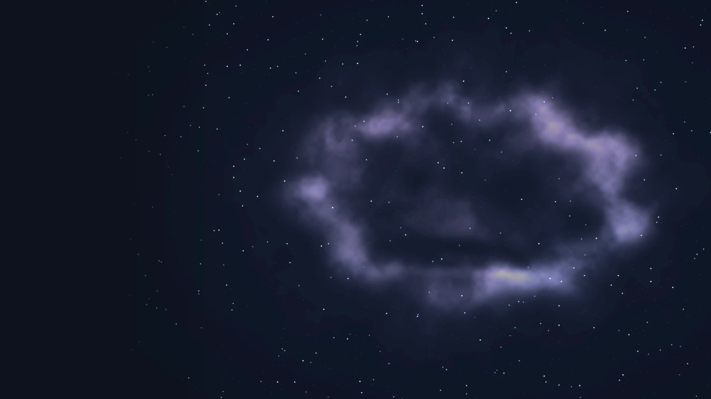

熟悉的开发方式
Scene、GameObject 与 Component，结合 C# 脚本和可视化编辑器，让搭建、调试与迭代衔接起来。

用熟悉的组件工作流和可组合的 2D 工具，
把你的下一个灵感变成游戏。
Scene、GameObject 与 Component，结合 C# 脚本和可视化编辑器，让搭建、调试与迭代衔接起来。
动画、物理、UI、音频与寻路等能力通过扩展包组织。需要什么，就组合什么。
用 AssetBundle 管理资源，按 package 增量构建、更新和修复，让内容交付成为开发流程的一部分。